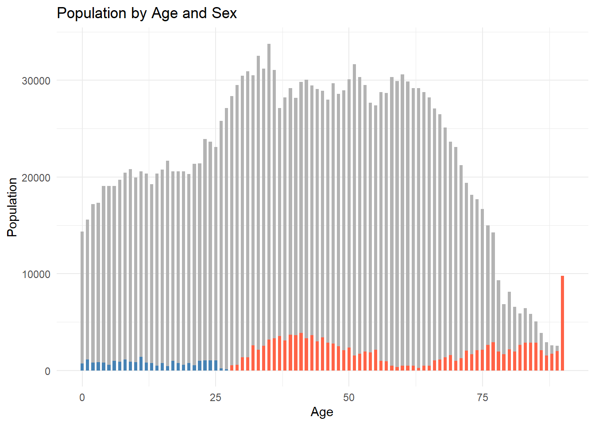
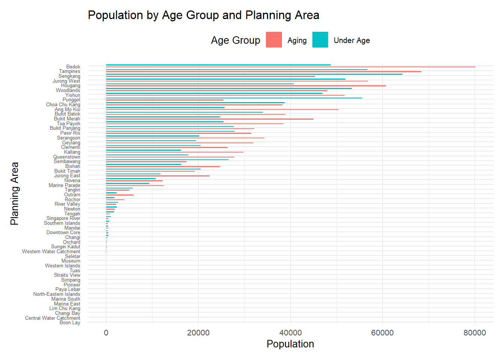
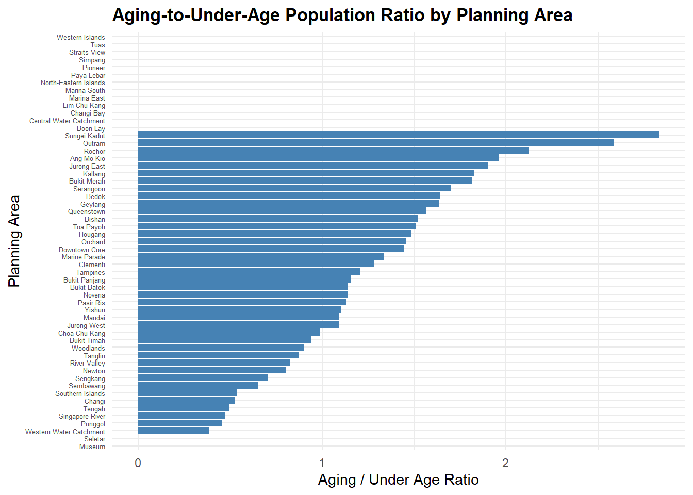
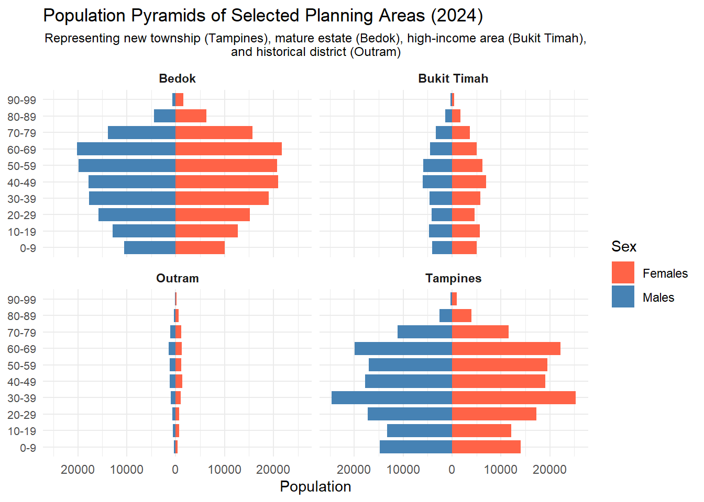

pacman::p_load(ggiraph, plotly,
patchwork, DT, tidyverse) Take-home exercise01
Part1 and Part2
Part 1
1.0 Overview
1.1 Background
Analysis on demographic structures and distribution of Singapore in 2024
1.2 Objective
Identify the gender distribution by age
Identify the age distribution by region
Conduct more detailed analysis on the regions with distinct characteristics
1.3 The Data
Singapore Residents by Planning Area / Subzone, Single Year of Age and Sex, June 2024 dataset shares by Department of Statistics, Singapore (DOS)
2. Packages
3. Getting Started
3.1 Importing data
res_data <- read_csv("respopagesex2024/respopagesex2024.csv")3.2 Data cleaning
3.2.1 Check missing values
res_data %>% filter(if_any(everything(), is.na))# A tibble: 0 × 6
# ℹ 6 variables: PA <chr>, SZ <chr>, Age <chr>, Sex <chr>, Pop <dbl>,
# Time <dbl>colSums(is.na(res_data)) PA SZ Age Sex Pop Time
0 0 0 0 0 0 3.2.2 Change data values
res_data <- res_data %>%
mutate(Age = ifelse(Age == "90_and_Over", "90", Age),
Age = as.numeric(Age)) 3.2.3 Check and Convert data type
str(res_data)tibble [60,424 × 6] (S3: tbl_df/tbl/data.frame)
$ PA : chr [1:60424] "Ang Mo Kio" "Ang Mo Kio" "Ang Mo Kio" "Ang Mo Kio" ...
$ SZ : chr [1:60424] "Ang Mo Kio Town Centre" "Ang Mo Kio Town Centre" "Ang Mo Kio Town Centre" "Ang Mo Kio Town Centre" ...
$ Age : num [1:60424] 0 0 1 1 2 2 3 3 4 4 ...
$ Sex : chr [1:60424] "Males" "Females" "Males" "Females" ...
$ Pop : num [1:60424] 10 10 10 10 10 10 10 10 30 10 ...
$ Time: num [1:60424] 2024 2024 2024 2024 2024 ...res_data <- res_data %>%
mutate(
Age = as.numeric(Age),
Pop = as.numeric(Pop)
)3.2.4 Data glimpse
str(res_data)tibble [60,424 × 6] (S3: tbl_df/tbl/data.frame)
$ PA : chr [1:60424] "Ang Mo Kio" "Ang Mo Kio" "Ang Mo Kio" "Ang Mo Kio" ...
$ SZ : chr [1:60424] "Ang Mo Kio Town Centre" "Ang Mo Kio Town Centre" "Ang Mo Kio Town Centre" "Ang Mo Kio Town Centre" ...
$ Age : num [1:60424] 0 0 1 1 2 2 3 3 4 4 ...
$ Sex : chr [1:60424] "Males" "Females" "Males" "Females" ...
$ Pop : num [1:60424] 10 10 10 10 10 10 10 10 30 10 ...
$ Time: num [1:60424] 2024 2024 2024 2024 2024 ...4. Exploratory Visual Analysis
4.1 Population by Age and Sex
The grey area represents the lower population for males and females. The colored bars represent the number of population exceeded another gender
library(dplyr)
library(ggplot2)
grouped_data <- res_data %>%
group_by(Age, Sex) %>%
summarise(Pop = sum(Pop, na.rm = TRUE), .groups = "drop")
wide_data <- grouped_data %>%
pivot_wider(names_from = Sex, values_from = Pop, values_fill = 0) %>%
mutate(
min_pop = pmin(Males, Females),
male_extra = ifelse(Males > Females, Males - Females, 0),
female_extra = ifelse(Females > Males, Females - Males, 0)
)
ggplot() +
geom_col(data = wide_data, aes(x = Age, y = min_pop),
fill = "gray70", width = 0.6) +
geom_col(data = wide_data, aes(x = Age, y = male_extra),
fill = "steelblue", width = 0.6) +
geom_col(data = wide_data, aes(x = Age, y = female_extra),
fill = "tomato", width = 0.6) +
labs(
title = "Population by Age and Sex",
x = "Age",
y = "Population"
) +
theme_minimal()
Observations: Obviously, in the age range of 0 to 30, the male population is larger than the female population. However, from 30 to 90, the female population is significantly larger than the male population.
4.2 Population by Age Group and Planning Area Analyze the number of the aging population in each region.
res_data_grouped <- res_data %>%
mutate(AgeGroup = case_when(
Age >= 0 & Age <= 20 ~ "Under Age",
Age >= 21 & Age <= 60 ~ "Adult",
Age >= 61 ~ "Aging"
)) %>%
group_by(PA, AgeGroup) %>%
summarise(Pop = sum(Pop, na.rm = TRUE), .groups = "drop")
res_data_grouped_filtered <- res_data_grouped %>%
filter(AgeGroup != "Adult")
ggplot(res_data_grouped_filtered, aes(x = Pop, y = reorder(PA, Pop), fill = AgeGroup)) +
geom_col(position = position_dodge(width = 0.9), width = 0.4) +
labs(
title = "Population by Age Group and Planning Area",
x = "Population",
y = "Planning Area",
fill = "Age Group"
) +
scale_y_discrete(expand = expansion(mult = c(0.4, 0.4))) +
theme_minimal() +
theme(
axis.text.y = element_text(size = 3, margin = margin(r = 5)),
legend.position = "top"
)
Observations: Given the large number of regions, it is proposed to construct new variables in order to more intuitively analyze and understand the distribution and proportion of the aging population.
4.3 Aging-to-Under-Age Population Ratio by Planning Area
library(dplyr)
age_summary <- res_data_grouped %>%
filter(AgeGroup %in% c("Under Age", "Aging")) %>%
group_by(PA, AgeGroup) %>%
summarise(Total = sum(Pop), .groups = "drop")
age_ratio <- age_summary %>%
tidyr::pivot_wider(names_from = AgeGroup, values_from = Total) %>%
mutate(ratio = Aging / `Under Age`)ggplot(age_ratio, aes(x = ratio, y = reorder(PA, ratio))) +
geom_col(fill = "steelblue") +
labs(
title = "Aging-to-Under-Age Population Ratio by Planning Area",
x = "Aging / Under Age Ratio",
y = "Planning Area"
) +
theme_minimal() +
theme(
axis.text.y = element_text(size = 5),
plot.title = element_text(face = "bold")
)
Observation: From this chart, we can see the ranking of regions with a larger proportion of the elderly population.
PART 2 Peer Learning
Comment for 2nd plot in https://pengxinhuang.netlify.app/take-home_ex01/#age-structure-comparison-across-planning-areas
pros 1. Appropriate type of plot. Easier to know the distribution. 2. Choose some typical area to represent diffirent area’s distribution. 3. Put plots together to compare
cons 1. X-axis: The data has negative numbers 2. Y-axis: The text overlaps, and the last group is NA 3. Overall: The X-axis index of the four pictures are different, which may cause some population misguidance
res_data <- res_data %>%
mutate(Age_group = case_when(
Age == "90_and_Over" ~ "90_and_Over",
TRUE ~ paste0(floor(as.numeric(Age) / 10) * 10, "-", floor(as.numeric(Age) / 10) * 10 + 9)
))
agg_data <- res_data %>%
group_by(PA, Age_group, Sex) %>%
summarise(Pop = sum(Pop, na.rm = TRUE)) %>%
ungroup()
agg_data <- agg_data %>%
mutate(Pop_plot = ifelse(Sex == "Males", -Pop, Pop))
ggplot(agg_data %>% filter(PA %in% c("Bedok", "Bukit Timah", "Outram", "Tampines")),
aes(x = Pop_plot, y = Age_group, fill = Sex)) +
geom_bar(stat = "identity", width = 0.8) +
scale_fill_manual(values = c("Males" = "steelblue", "Females" = "tomato")) +
scale_x_continuous(labels = abs) +
facet_wrap(~PA, ncol = 2, scales = "fixed") +
labs(title = "Population Pyramids of Selected Planning Areas (2024)",
subtitle = "Representing new township (Tampines), mature estate (Bedok), high-income area (Bukit Timah),\nand historical district (Outram)",
x = "Population",
y = NULL,
fill = "Sex") +
theme_minimal() +
theme(
axis.text.y = element_text(size = 8),
plot.subtitle = element_text(size = 9, hjust = 0.5),
strip.text = element_text(face = "bold")
)